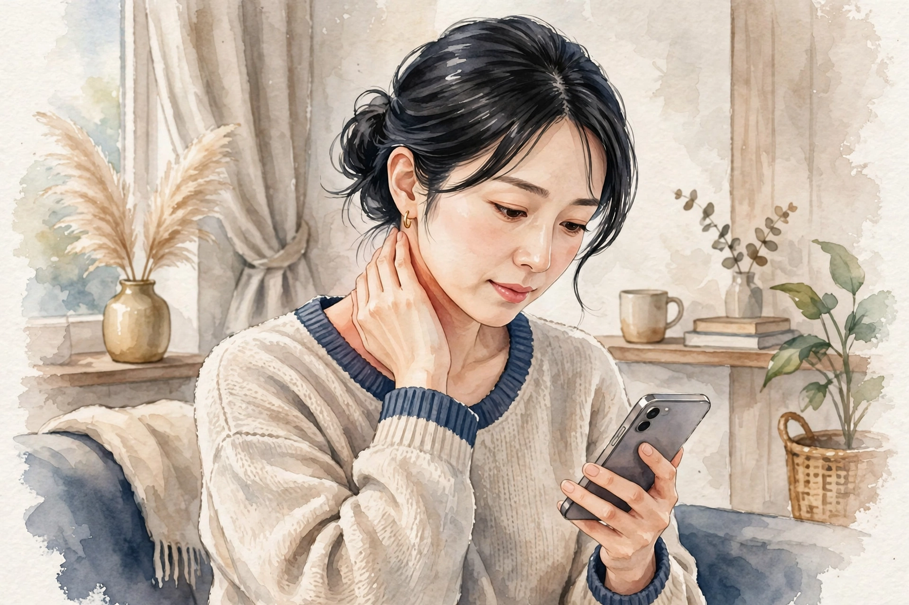

女性専用 ／ オイルマッサージ × 美容整体
一日の終わりに、
肩と心をほどく場所を、
大宮に。
近日開院予定（受付は開始次第、このサイトとLINE公式でお知らせします）
美容整体ステラ・ベテルギウスは、さいたま市・大宮エリアで開院準備中の女性専用サロンです。仕事帰りの夕方から夜にかけて、オイルマッサージと美容整体で、肩こりや首の重さ、姿勢の崩れといった日々のお悩みに寄り添います。
- 女性専用 女性のお客様のみご利用いただけます
- 90分 10,000円 分かりやすい単一価格です
- 月〜土 17:00〜22:00（予定） お仕事帰りに立ち寄れる時間帯です

こんなお悩みはありませんか
当てはまるものが多いほど、毎日の姿勢や過ごし方に負担が積み重なっているサインかもしれません。まずはチェックしてみてください。
- 夕方になると肩が重く、手で揉みたくなる
- スマートフォンを見る時間が長く、首が前に出ている気がする
- デスクワークで背中が丸まり、姿勢が気になる
- 脚のむくみが気になり、靴がきつく感じる日がある
- 頭が重く感じて、すっきりしない日が続いている
- 冷えが気になり、手足が冷たいことが多い
- 眠りが浅く、朝起きても疲れが残っている感じがする
- 顔のむくみや、フェイスラインのもたつきが気になる
お悩みごとの詳しい解説とセルフケアは、でご紹介しています。
施術の様子
ベテルギウスの施術は、オイルマッサージと美容整体を組み合わせた90分です。当日のお体の状態をお聞きしながら、力加減や重点的にほぐす部位を調整します。
01
カウンセリング
その日のお悩みや体調、気になる部位をお聞きします。姿勢の様子も一緒に確認し、施術の進め方をご相談します。
02
オイルマッサージ
オイルを使って背中・肩・脚などを流れるようにほぐします。こわばりやすい肩や首まわりは、様子を見ながら丁寧に圧を調整します。
03
美容整体
骨盤や背骨まわりのバランスに目を向けながら、姿勢が整いやすい状態を目指します。無理に強い力を加える施術は行いません。
※ 当サロンでは鍼灸は行いません。施術は医療行為ではなく、リラクゼーションと美容を目的としたものです。
料金・営業案内
料金はシンプルな単一価格です。コース選びで迷うことなく、当日のお悩みに合わせて内容を組み立てます。
90分 ／ 10,000円（税込）
近日開院予定（受付は開始次第、このサイトとLINE公式でお知らせします）- ・ 料金は90分10,000円の単一価格です
- ・ 担当セラピストは開院時にご案内します
- ・ お問い合わせ用LINE公式アカウントを開設しました
| 店名 | 美容整体ステラ・ベテルギウス |
|---|---|
| 場所 | さいたま市・大宮エリアで開院準備中（施設・住所は決まり次第ご案内します） |
| 対象 | 女性専用 |
| 施術内容 | オイルマッサージ、美容整体（鍼灸は行いません） |
| 料金 | 90分 10,000円（単一価格） |
| 営業時間（予定） | 月〜土 17:00〜22:00 ／ 日曜休み（いずれも予定です） |
| 予約受付 | 近日開院予定のため、現在は受付を行っていません。受付は開始次第、このサイトとLINE公式でお知らせします |
| お問い合わせ | お問い合わせ用LINE公式アカウントを開設しました |
姉妹店のご案内
ステラシリーズは、星の名前を冠した女性専用サロンです。営業中の姉妹店は各店のサイトでご案内しています。
営業中の姉妹店
開院準備中の姉妹店
- 美容整体ステラ・ベテルギウス（大宮）開院準備中
このサイトです - 美容整体ステラ・カペラ（名古屋）開院準備中
- 美容整体ステラ・アンタレス（福岡）開院準備中
- 美容整体ステラ・デネブ（札幌）開院準備中
- 美容整体ステラ・プロキオン（横浜）開院準備中
- 美容整体ステラ・アルデバラン（仙台）開院準備中
- 美容整体ステラ・レグルス（広島）開院準備中
- 美容整体ステラ・リゲル（東京）開院準備中
開院のお知らせについて
美容整体ステラ・ベテルギウスは近日開院予定です。開院日と受付の開始は、このサイトとLINE公式でお知らせします。お問い合わせ用LINE公式アカウントを開設しました。開院まで、でセルフケアの読み物をお届けします。
セラピストとして働くことに興味のある方は、をご覧ください。
LINE公式アカウントでお問い合わせ
開院・受付開始のお知らせもLINEでお届けします
お悩み別ページ
気になるお悩みを選ぶと、要因の整理・セルフケア・受診の目安をまとめた解説ページをご覧いただけます。解説は一般的な情報であり、診断や治療を行うものではありません。
肩こり
夕方に重くなる肩、揉んでも戻ってしまう張り。デスクワークや姿勢との関わり、毎日のセルフケアの組み立て方を解説します。
首こり
スマートフォンやパソコンで前に出た頭を支える首の負担。首まわりの仕組みと、無理のないほぐし方・整え方を解説します。
腰の重さ・腰痛
電車に長く座った日に固まる腰、夕方に伸びにくい腰。通勤の座位を含めた要因を整理し、毎日のセルフケアを解説します。
眼精疲労・目の疲れ
通勤のスマホと画面作業で重くなる目元。要因を整理し、蒸しタオルや電車での目の休め方など毎日のセルフケアを解説します。
姿勢・猫背が気になる
長距離通勤とデスクワークで丸くなる背中、前に出る頭。重心線の考え方など猫背の仕組みを整理し、胸を開くストレッチや座り方の工夫などセルフケアを解説します。
寝つき・眠りの浅さ
早起き通勤で寝る時刻が合わない、夜中に目が覚める。体内時計と深部体温の仕組みを整理し、安眠・神門など眠りのツボや起床の整え方などセルフケアを解説します。
脚のむくみ・だるさ
長距離通勤の座位で張る夕方の脚。要因を整理し、電車の中でできる小さな足の動きなど毎日のセルフケアを解説します。
冷えが気になる
電車に長く座った日に冷え切る足先、通勤と冷房の重なり。要因を整理し、足湯や座ったままの脚の運動など毎日のセルフケアを解説します。
頭の重さ・すっきり感
通勤の電車を降りると重い頭、こめかみの締めつけ感。うつむき姿勢など要因を整理し、こめかみをほぐすセルフケアや受診の目安を解説します。
体のだるさ
通勤で積み重なる体の重さ、抜けないだるさ。長距離通勤や睡眠不足など要因を整理し、湯船などのセルフケア、受診の目安を解説します。
よくある質問
開院前にいただくことの多いご質問をまとめました。受付に関する最新情報は、このサイトでお知らせします。
いつ開院しますか
近日開院予定です。具体的な開院日は決まり次第、このサイトとLINE公式でお知らせします。現在は予約の受付を行っていません。
場所はどこですか
さいたま市・大宮エリアで開院準備中です。施設と住所は確定次第ご案内します。それまでの間、所在地に関する個別のお問い合わせにはお答えできない場合があります。
女性専用ですか
はい、女性のお客様専用のサロンです。
料金はいくらですか
オイルマッサージと美容整体を組み合わせた90分コースが10,000円の単一価格です。時間や部位によって料金が変わることはありません。
どんな施術ですか。鍼は使いますか
オイルを使ったマッサージと、姿勢のバランスに目を向ける美容整体を組み合わせた施術です。鍼灸は行いません。また、施術は医療行為ではなく、病気の診断や治療を目的としたものではありません。
営業時間を教えてください
月〜土の17:00〜22:00、日曜休みを予定しています。開院時に改めて確定した時間をご案内します。
担当のセラピストは分かりますか
担当セラピストは開院時にご案内します。当サロンは業務委託スタッフ主体の運営のため、個人プロフィールは掲載していません。
予約や問い合わせはどうすればいいですか
受付は開始次第、このサイトとLINE公式でお知らせします。お問い合わせ用LINE公式アカウントを開設しました。下のボタンから友だち追加してお問い合わせください。
妊娠中でも施術を受けられますか
体調や時期によって対応が異なります。開院後の受付開始時に、あらためてご案内します。ご不安な場合は、かかりつけ医への確認をおすすめします。
痛い施術ですか
力加減はお声を聞きながら調整します。無理に強い力を加える進め方はしませんので、施術中も遠慮なくお伝えください。
経絡・経穴ガイド
東洋医学で体のエネルギーの通り道とされる「経絡」と、その上にある要所「経穴（ツボ）」の基礎知識です。当サロンの施術では鍼は使いませんが、経穴の位置を目安に、手や指でやさしく圧をかけるアプローチを取り入れています。ここでの説明は伝統的な考え方の紹介であり、特定の症状への効果を保証するものではありません。
経絡とは
経絡は、東洋医学の古典に基づく考え方で、全身を巡る流れの道筋を指します。正経と呼ばれる主要な経絡は12本あり、それぞれ内臓の働きと結びつけて考えられてきました。経穴は経絡上に点在する要所で、古典では360以上が知られています。現代では、経穴の位置は骨や筋肉の目印からの距離で表す方法が広く使われています。
施術でよく触れる経穴
| 肩井（けんせい） | 肩の稜線のほぼ中央、首の付け根と肩先の中間あたりにある経穴。肩まわりの施術で目安にする代表的な点です。強く押しすぎず、呼吸に合わせてやさしく圧をかけます。 |
|---|---|
| 天柱（てんちゅう） | 首の後ろ、髪の生え際の高さで、太い筋肉の外側のくぼみにある経穴。首の後ろ側をほぐす際の目安になります。 |
| 風池（ふうち） | 後頭部の下、耳の後ろの骨と首の筋肉の間のくぼみにある経穴。天柱よりやや外側に位置します。頭を支えるように、指の腹で包むように触れます。 |
| 合谷（ごうこく） | 手の甲側、親指と人差し指の骨が合う部分のやや人差し指寄りのくぼみにある経穴。手軽に触れられるため、セルフケアでも使われることが多い点です。 |
| 曲池（きょくち） | 肘を曲げたときにできるしわの、外側の端にある経穴。腕まわりの施術の目安になります。 |
| 足三里（あしさんり） | 膝のお皿の下、外側のくぼみから指幅4本ほど下にある経穴。脚の施術でよく知られる点の一つです。 |
| 三陰交（さんいんこう） | 内くるぶしの頂点から指幅4本ほど上、すねの骨の後ろ際にある経穴。脚の内側のラインをたどる際の目安です。 |
| 湧泉（ゆうせん） | 足の裏、指を曲げたときにくぼむ部分にある経穴。足裏へのアプローチの目安になります。 |
ご自宅で経穴に触れるときの注意
- 押す力は「気持ちよい」と感じる程度までにとどめ、痛みを我慢して強く押さないでください。
- 1か所につき、ゆっくり呼吸しながら5秒ほど圧をかけ、数回繰り返すくらいが目安です。
- 皮膚に傷や炎症がある場所、体調がすぐれないときは避けてください。
- しびれや強い痛みなど気になる症状がある場合は、セルフケアで様子を見続けず、医療機関に相談してください。
※ 経穴の位置は体の目印からの目安です。個人差があるため、位置の感じ方には幅があります。
セラピスト募集
美容整体ステラ・ベテルギウス（さいたま市・大宮エリア）では、開院に向けて業務委託のセラピストを募集しています。夕方から夜の時間帯を中心に、あなたのペースで働ける形を一緒に作っていきましょう。
| 雇用形態 | 業務委託 |
|---|---|
| 報酬 | 施術料の60％ |
| 勤務地 | さいたま市・大宮エリア（施設は開院準備中です） |
| 働く時間 | 月〜土 17:00〜22:00（予定）の範囲で、希望に合わせて設定できます |
| 対象 | 女性セラピストを募集しています（女性専用サロンのため） |
未経験者は研修無料
未経験の方も歓迎します。施術の基礎から学べる研修を無料でご用意していますので、安心してスタートできます。
経験者は技術をそのままメニューに
経験者の方は、お持ちの技術をそのままメニュー化できます。これまで磨いてきた手技を、そのままお客様に届けてください。
時間は希望に合わせて
働く時間は希望に合わせて設定できます。週に数日だけ、夜の数時間だけといった働き方もご相談ください。
Stella Betelgeuse — Beauty Seitai Salon for Women
Stella Betelgeuse is a women-only salon preparing to open in the Omiya area of Saitama City, Japan. We combine oil massage with beauty seitai (a Japanese body-balancing treatment) in a single, simple 90-minute session.
| Salon | Beauty Seitai Stella Betelgeuse — women only |
|---|---|
| Location | Omiya area, Saitama City (preparing to open; address to be announced) |
| Treatment | Oil massage and beauty seitai. We do not offer acupuncture. Treatments are for relaxation and beauty care, and are not medical treatment. |
| Price | 90 minutes — ¥10,000 (single flat rate, tax included) |
| Hours (planned) | Monday to Saturday, 5:00 p.m. – 10:00 p.m. Closed on Sundays (planned) |
| Therapists | Our therapists will be introduced when the salon opens. |
| Contact | Our official LINE account for inquiries is now open. Please add us as a friend using the button below to contact us. |
About the treatment
Each session begins with a short consultation about how your body feels that day — stiff shoulders, a heavy neck, tired legs, or posture concerns. The oil massage works over the back, shoulders and legs with pressure adjusted to your comfort, and the beauty seitai part focuses on the balance around the pelvis and spine, aiming for a posture that feels naturally upright. Strong, painful techniques are not used.
Sister salons
Stella Betelgeuse is part of the Stella series of women-only salons, each named after a star. Our sister salons in Umeda (Osaka), Sannomiya (Kobe), Namba (Osaka), Ashiya and Kyoto are already open, and further salons — including Betelgeuse in Omiya — are in preparation in Nagoya, Fukuoka, Tokyo, Sapporo, Yokohama, Sendai and Hiroshima.
ブログ・コラム
お悩み別の解説ページと、季節に合わせたセルフケアのコラムをお届けします。開院に向けて、少しずつ記事を増やしていきます。
-
 コラム ／ 季節のセルフケア
コラム ／ 季節のセルフケア朝晩の冷え込みが増える晩秋は、肩まわりの張りや手足の冷たさを感じやすい時期です。温める工夫と、無理なく続けられるセルフケアをご紹介します。
-
 お悩み別 ／ 肩こり
お悩み別 ／ 肩こりデスクワークや姿勢と関わる肩の張りを、要因ごとに整理しました。毎日のセルフケアと、受診を考える目安もまとめています。
-

お悩み別 ／ 首こり前に出た頭を支える首の負担を、姿勢の観点から整理しました。画面との付き合い方や、首まわりのセルフケアをご紹介します。
-
 お悩み別 ／ 冷え
お悩み別 ／ 冷え長距離通勤と座り仕事のある大宮で冷えを感じやすくなる要因を整理しました。毎日のセルフケアと受診の目安もまとめています。
-
 お悩み別 ／ 腰の重さ・腰痛
お悩み別 ／ 腰の重さ・腰痛長距離通勤と座り仕事のある大宮で重くなりやすい腰の要因を整理しました。毎日のセルフケアと受診の目安もまとめています。
-
 お悩み別 ／ 眼精疲労・目の疲れ
お悩み別 ／ 眼精疲労・目の疲れ長距離通勤のある大宮で目の疲れを感じやすくなる要因を整理しました。職場と自宅でできるセルフケアと受診の目安もまとめています。
-
 お悩み別 ／ 脚のむくみ
お悩み別 ／ 脚のむくみ長距離通勤のある大宮で脚のむくみを感じやすくなる要因を整理しました。毎日のセルフケアと受診の目安もまとめています。
-
 お悩み別 ／ 頭痛・頭の重さ
お悩み別 ／ 頭痛・頭の重さ長距離通勤で頭が重くなりやすい方へ、電車内の姿勢など要因の整理と、こめかみほぐしなどのセルフケア、受診の目安をまとめました。
-
 お悩み別 ／ 体のだるさ
お悩み別 ／ 体のだるさ長距離通勤で体のだるさが抜けない方へ、通勤の負担や睡眠など要因の整理と、湯船などのセルフケア、受診の目安をまとめました。
-
 お悩み別 ／ 姿勢・猫背
お悩み別 ／ 姿勢・猫背長距離通勤とデスクワークで背中が丸くなりやすい方へ、重心線の考え方に基づく猫背の仕組みの整理と、胸を開くストレッチなどのセルフケア、受診の目安をまとめました。
-
 お悩み別 ／ 寝つき・眠りの浅さ
お悩み別 ／ 寝つき・眠りの浅さ寝つきの悪さや眠りの浅さが気になる方へ、体内時計と深部体温の仕組みの整理と、安眠・神門などのツボ押しや起床の整え方といったセルフケア、受診の目安をまとめました。
開院のお知らせや新しい記事は、このページとサイトのトップでご案内します。
サイトマップ
美容整体ステラ・ベテルギウスのサイト内のページ一覧です。
サイト内のページ
記事ページ
姉妹店（外部サイト）
大宮で気になる肩こり ── 通勤と暮らしから考える、要因とセルフケア
「朝の通勤電車を降りた時点で、もう肩が重い」「仕事を終えて大宮駅に着くころには、肩から背中まで板のようになっている」「休日にほぐしても、月曜日にはまた同じ重さ」。さいたま市・大宮周辺で暮らし、働く方から寄せられる声には、こうした肩まわりの訴えが目立ちます。大宮は新幹線と在来線が集まる大きなターミナル駅を抱え、都内へ通う方、地元で働く方、乗り換えで行き来する方が交差する街です。移動の長さや荷物の多さ、立ちっぱなしの時間の長さが、肩への負担と結びつきやすい土地柄とも言えます。肩こりは正式な病名ではなく、首から肩、背中にかけての張り・重さ・だるさをまとめた呼び名です。このページでは、大宮での暮らしを思い浮かべながら、肩が張りやすくなる要因を整理し、毎日の生活に組み込みやすいセルフケアと、医療機関へ相談する目安をまとめました。
肩まわりは、頭と腕をぶら下げている場所
肩の稜線から背中にかけて広がる僧帽筋は、頭を支えるだけでなく、腕の重さも受け止めています。腕一本の重さは体重の数パーセントにあたると言われ、その腕を前に出してキーボードを打ったり、吊り革につかまって引っ張られたりするたびに、肩まわりの筋肉は働き続けます。筋肉は収縮と弛緩を繰り返す分には疲れを流しやすいものの、同じ姿勢でじっと力を入れ続けると血の巡りが滞り、老廃物がたまって重さや張りを感じやすくなると考えられています。張る場所は人それぞれで、肩の稜線の中央を押すと気持ちよい方、肩甲骨の内側が詰まるように感じる方、首筋から肩先まで広く重い方とさまざまです。「自分はどこが、どんな日に張るのか」を知ることが、ケアの出発点になります。
要因の整理：大宮の暮らしと肩の負担
1. 電車移動の長さと、吊り革・荷物の持ち方
大宮から都内へ通勤・通学する方の中には、行きも帰りも座れず、片手で吊り革や手すりにつかまったまま30分以上立つ方も少なくありません。体が揺れるたびに肩と腕で体重の一部を支えるため、肩まわりには小さな負荷が連続します。さらに、重いバッグをいつも同じ側の肩にかけていると、左右のバランスが偏り、その側の肩だけが張りやすくなります。帰宅後に肩の高さが左右で違って見える方は、荷物の持ち方が関わっている可能性があります。
2. 駅チカのデスクワークと在宅勤務の行き来
大宮駅周辺のオフィスや商業施設で働く方、自宅でテレワークをする方に共通するのは、画面の前で腕を前に出した姿勢が長いことです。肩が内側に巻き込み、肩甲骨が開いたまま固まると、僧帽筋は引き伸ばされながら力を出し続けることになります。出社日と在宅日で机や椅子の環境が変わる方は、どちらの日によく張るかを比べてみると、ご自身の負担の出どころが見えてきます。
3. 埼玉の冬の北風と冷え
大宮の冬は、関東平野を吹き抜ける乾いた北風が体感温度を下げます。駅からの帰り道、自転車や徒歩で風にさらされた首元や肩は冷えやすく、筋肉もこわばりやすくなります。夏場も、電車や商業施設の冷房で肩が冷えたまま夕方を迎えることがあります。冷えは張りの増幅要因として見落とされがちですが、マフラーや羽織り物で首元を守るだけでも、帰宅時の肩の軽さは変わってきます。
4. 家事・育児と週末の負担の偏り
平日はデスクワーク、週末は買い出しや子どもの送り迎え、公園遊びの付き添いと、肩の使い方が平日と休日でがらりと変わる方も多い街です。抱っこや荷物運びで週末に負担が集中すると、月曜の朝から肩が重い、というリズムになりがちです。張りの出る曜日やタイミングに心当たりがある方は、その前後に温める・ほぐす時間を先に入れておく「先回りのケア」が役立ちます。
5. 眠りと回復の不足
帰宅が遅くなりがちな生活では、入浴や食事の時間が圧縮され、体を温め直す間もなく布団に入る日が続きます。眠っている間も肩の力が抜けきらないと、朝の時点で張りが残ります。枕の高さが合わず首が前に曲がった姿勢で眠ることも、肩まわりの負担につながります。よく眠れた日の翌朝は肩が軽い、と感じる方は、回復の質が肩の状態を左右しているサインです。
当サロンでのアプローチ
ステラ・ベテルギウスでは、まずその日の張りの場所と出方をお聞きし、オイルマッサージで背中・肩甲骨まわり・首の付け根を流れるようにほぐしていきます。肩の稜線にある肩井（けんせい）など経穴の位置を目安に、呼吸に合わせて圧を加減し、強く揉むこと自体を目的にはしません。美容整体では骨盤と背骨まわりのバランスに目を向け、肩だけに負担が集まらない姿勢の土台を目指します。なお当サロンの施術は医療行為ではなく、病気の診断や治療を目的とするものではありません。気になる症状が続く場合は、医療機関への相談とあわせてご利用ください。
ご自宅でできるセルフケア
帰宅後の「肩のすくめ落とし」
椅子に座り、両肩を耳に近づけるようにぐっとすくめて3秒保ち、息を吐きながら一気に力を抜きます。5回ほど繰り返すと、無意識に入っていた肩の緊張が抜ける感覚をつかめます。電車を降りた直後や、仕事を切り上げるタイミングに取り入れるのがおすすめです。
タオルを使った胸開き
フェイスタオルの両端を持ち、両腕を頭上へ上げた姿勢から、肘を軽く曲げながらタオルを頭の後ろへ回し、胸を開きます。肩甲骨が背中の中央へ寄る感覚を確かめながら、無理のない範囲で5回繰り返します。肩そのものではなく、縮こまりやすい胸側を伸ばすことで、姿勢が戻しやすくなります。
参道歩きでほぐす習慣
大宮には、氷川神社へ続く長い参道や、大宮公園の散策路など、気持ちよく歩ける場所があります。歩くときは腕を自然に振ることで、肩まわりの筋肉が収縮と弛緩を繰り返し、巡りを助けます。休日に20〜30分、少し速めのペースで歩く習慣は、肩のケアと気分転換を兼ねられます。無理のない範囲で、続けることを優先してください。
温めと冷え対策の見直し
帰宅後はシャワーだけで済ませず、湯船で肩まで浸かる日を週に数回作ってみてください。時間がない日は、蒸しタオルを首の付け根に数分当てるだけでも構いません。通勤時は、北風の強い日にマフラーで首元を覆う、冷房の効いた車内では羽織り物を使うなど、「冷えたまま放置しない」工夫が翌日の肩を軽くします。
バッグの持ち方を週単位で変える
片肩がけのバッグは、週の前半と後半でかける側を入れ替える、重い日はリュックにするなど、負担の偏りをならす工夫ができます。帰宅後にバッグの中身を一度点検し、持ち歩かなくてよいものを置いていくことも、肩にとっては立派なケアです。駅までの自転車通勤の方は、前かごに荷物を入れて肩から下ろすだけでも違いが出ます。
セルフケアを続けるコツ
大切なのは、特別な時間を大きく取ることではなく、張りをため込む前に小分けにほぐすリズムを作ることです。電車を降りたら肩のすくめ落とし、湯上がりに胸開き、といった具合に、すでにある行動の直後にくっつけてしまうと続きやすくなります。張りの強い日だけ頑張るのではなく、調子のよい日も含めて淡々と続けることで、肩の状態の波そのものが小さくなっていきます。それでも抜けない重さが続くときは、ご自身の手では届きにくい背中や肩甲骨まわりのケアを、サロンの施術のような外からの手当と組み合わせることが、長く付き合っていくうえでの現実的な選択です。
受診の目安
肩の張りの背景は一つではなく、通勤の姿勢、働く環境、季節の冷え、眠りの質などが重なっています。全部を一度に変えようとせず、続けられる工夫から少しずつ取り入れてみてください。ステラ・ベテルギウスはさいたま市・大宮エリアで開院準備中です。近日開院予定（受付は開始次第、このサイトとLINE公式でお知らせします）。お問い合わせ用LINE公式アカウントを開設しました。
大宮で気になる首こり ── 電車時間と頭の位置から考える、要因とセルフケア
「大宮から電車に乗って、気づけばずっと下を向いてスマートフォンを見ていた」「乗り換えの案内表示を見上げるたびに、首の後ろが詰まる感じがする」「夕方になると首が重くて、頭までどんよりする」。首こりの相談は、肩こりと並んで当サロンが想定する代表的なお悩みです。首は、成人でおよそ5〜6キログラムある頭を、7つの頸椎（けいつい）という細い骨の柱で支えています。支える構造が細い分、頭の位置が少しずれるだけで、首の後ろ側の筋肉にかかる負担は大きく変わります。大宮は通勤・通学の電車移動が長くなりやすい街で、車内でのうつむき姿勢が日常に溶け込んでいる方も多いはずです。このページでは、首の仕組みと負担の集まり方を整理し、無理のないセルフケアと、受診を考える目安をまとめました。
首の仕組み：ゆるやかなカーブが、頭を支えている
首の骨は、横から見るとゆるやかに前へ張り出すカーブを描いています。このカーブがあることで、頭の重さはまっすぐ下へ分散され、筋肉の負担は最小限で済みます。ところが画面をのぞき込むように頭が前へ傾くと、てこの原理で首の後ろ側の筋肉が強く引っ張られ、頭を落とさないように支え続ける働きを強いられます。緊張が長く続いた筋肉は血の巡りが滞り、重さや詰まり感として自覚されやすくなります。首と肩は筋肉でつながっているため、首の張りが肩に広がることも、肩のこわばりが首を重くすることもあり、ケアは首だけに絞らず、背中まで含めて考えることが大切です。
要因の整理：大宮の日常で首に負担が集まる場面
1. 通勤電車でのうつむき姿勢
大宮から都内方面へ向かう電車では、座れる日もあれば、立ったまま長く乗る日もあります。どちらの場合も、手元の画面に視線を落とす姿勢は頭を前に傾け、首の後ろ側へ負担を集めます。乗り換えの多い日は、案内表示を見上げる動きと、うつむく動きの繰り返しで、首まわりが休まる間がありません。画面をできるだけ目線の高さへ近づける、停車駅ごとに一度顔を上げる、といった小さい区切りが、ため込む量を変えます。
2. テレワークと出社の環境差
自宅のダイニングテーブルや駅前のシェアスペースでノートパソコンを開く働き方が増え、画面の位置が低くなりがちな環境も珍しくありません。画面が低いと顔が前に出て、首が突き出た姿勢が固まります。台や本で画面を持ち上げ、外付けキーボードを使うなど、環境を先に整えるほうが、「正しい姿勢を保とう」と頑張り続けるより無理がありません。出社日と在宅日で首の張り方が違う方は、環境差が手がかりになります。
3. 枕の高さと、休日の寝だめ
平日の睡眠不足を取り戻そうと、休日に長く眠る方も多いのではないでしょうか。枕が高すぎると首が前に曲がった姿勢で、低すぎると頭が落ちて首が反った姿勢で眠ることになり、どちらも起床時の首の張りにつながります。朝だけ首が重く、日中に和らぐ場合は、枕や寝姿勢の見直しが先決です。タオルを重ねて高さを少しずつ変え、数日単位で試す方法があります。
4. 勉強・読書のうつむき時間
大宮は学校や予備校、図書館も多い街で、机に向かう時間が長い学生の方や、資格の勉強を続ける社会人の方も少なくありません。本やノートを見続ける姿勢は、パソコン作業と同じく頭を前に傾けます。タイマーで45分ごとに一度立ち上がる、参考書を台にのせて傾斜をつける、など、勉強のリズムの中に首を休ませる区切りを組み込むことが大切です。
5. 緊張が続く日の呼吸の浅さ
締め切りの近い日や人前で話す日は、無意識に肩が上がり、呼吸が浅くなりがちです。首の横や前側の筋肉は呼吸を助ける働きも担うため、浅い呼吸が続くと首まわりの緊張が抜けにくくなります。作業の合間に、吸うことよりも「ゆっくり吐き切る」ことを意識するだけでも、首と肩の力を抜くきっかけになります。
当サロンでのアプローチ
ステラ・ベテルギウスでは、首そのものへ強い力を加える操作は行いません。まず肩・背中・肩甲骨まわりをオイルマッサージで丁寧にほぐして土台をゆるめ、そのうえで首まわりには指の腹で包むようなやさしい圧で触れていきます。天柱（てんちゅう）や風池（ふうち）といった経穴の位置を目安にし、施術中に首を鳴らすような操作は行いません。美容整体では骨盤から背中までのバランスに目を向け、頭が自然な位置に戻りやすい状態を目指します。なお当サロンの施術は医療行為ではなく、病気の診断や治療を目的とするものではありません。症状が強い場合や長く続く場合は、医療機関での相談とあわせてご利用ください。
ご自宅でできるセルフケア
あご引きの小さな運動
椅子に座って背筋を伸ばし、正面を向いたまま、あごを水平に後ろへ引くように小さく動かして5秒保ち、ゆっくり戻します。あご先に指を軽く当てると、動きの方向が分かりやすくなります。5回を目安に、電車の待ち時間や作業の合間に取り入れてみてください。頭の位置を本来の場所へ戻す感覚をつかむための、負担の少ない運動です。痛みやめまいが出る場合は行わないでください。
首の側面を伸ばすストレッチ
片手を頭の側面に添え、耳を肩へ近づけるように首をゆっくり横へ倒し、心地よい伸びの位置で15〜20秒保ちます。反対側の肩が一緒に上がらないよう、もう一方の手で椅子の縁を軽く押さえるのがコツです。左右ともに行い、勢いや強い力で引っ張らないでください。しびれやめまいを感じたら、すぐに中止します。
車内での画面の持ち方
電車でスマートフォンを使うときは、できるだけ目線の高さへ持ち上げ、うつむく角度を小さくします。長時間の操作を避け、停車駅のたびに一度顔を上げて遠くを見ることも、首と目の両方を休ませます。就寝前1時間は画面から離れる時間を意識すると、首の緊張が残ったまま眠りにつくことを避けやすくなります。
首元を温めてから動かす
入浴では首まで湯に浸かり、冷房や北風で冷えた日は、スカーフや蒸しタオルで首の後ろを温めます。冷えてこわばった筋肉は動きにくいため、ストレッチは温めたあとに行うほうが無理なく伸ばせます。朝の張りが強い方は、起きてすぐに首を大きく回すのではなく、まず温めることから始めてみてください。
一週間の「張りメモ」
首の張りは、忙しい日だけに出るとは限りません。移動の多い日、重い荷物を持った日、よく眠れなかった翌朝など、きっかけは人によって異なります。一週間ほど、張りを強く感じた場面をスマートフォンのメモに一行だけ残しておくと、自分のパターンが見えてきます。パターンが分かれば、張りやすい日の前夜に早めに休む、通勤バッグを軽くする、といった先回りの対策が立てやすくなります。
首こりは、肩と背中とあわせて見る
首の張りを感じる方の多くは、肩や背中にも同じようなこわばりを抱えています。首・肩・背中は一続きの筋肉と筋膜でつながり、姿勢の影響を共有しているためです。首だけを集中的に揉んでも、背中が丸まった姿勢のままでは頭の位置は変わらず、首への負担はすぐに戻ってしまいます。反対に、肩甲骨まわりが動きやすくなると頭の位置が整いやすくなり、首の後ろ側の筋肉が頑張りすぎなくて済むようになります。セルフケアでも、首の運動に肩回しや胸を開くストレッチを組み合わせることが、結果として首の楽さにつながります。当サロンの施術でも、首まわりだけに絞らず、肩と背中を含めた全体のバランスを見ながら進めていきます。
受診の目安
首こりのケアは、「首だけをほぐす」よりも、頭の位置や電車での過ごし方、画面との付き合い方を含めて見直すことが近道です。できることから一つずつ取り組み、ご自身では届きにくい肩や背中のケアは、サロンの施術にお任せください。ステラ・ベテルギウスはさいたま市・大宮エリアで開院準備中です。近日開院予定（受付は開始次第、このサイトとLINE公式でお知らせします）。お問い合わせ用LINE公式アカウントを開設しました。
大宮で気になる冷え ── 長い通勤と座りっぱなしから考える、要因とセルフケア
「電車に長く座った日は、足先まで冷え切っている」「夕方になると、冷えとだるさが一緒に来る」。大宮から都心へ通う方の冷えのお悩みです。大宮はターミナル駅を抱える街で、ここから長い通勤時間を過ごす方も少なくありません。電車の座位と職場のデスクワークが重なると、一日の大半を冷房の効いた場所で、座ったまま過ごすことになります。座る時間が長いほど、熱を生む筋肉の出番は減り、脚の巡りも滞ります。このページでは、長距離通勤と座り仕事に即した冷えの要因を整理し、ご自宅でできるセルフケアと、受診を考える目安をまとめました。大宮から都心への通勤は、朝晩の冷え込みの時間帯と重なります。冬の朝、冷えた車内やホームで過ごす時間も、一日の冷えの出発点です。通勤の前後の過ごし方まで含めて、一日の冷えを組み立てる視点が役に立ちます。
冷えは、体のどこで生まれるのか
体の熱は、主に筋肉が動くことで生まれ、血の巡りによって全身へ運ばれます。手足の先は心臓から遠く、巡りが滞ると冷たさを感じやすい場所です。長く座っていると、ふくらはぎをはじめとする脚の筋肉がほとんど働かず、熱も巡りも生まれにくくなります。そこへ電車やオフィスの冷房が重なると、足先から冷えが進みます。体は中心部の体温を守ろうとして手足の血管を細くする働きを持っており、冷えた状態が続くと手足の冷たさが抜けにくくなります。お腹まわりは内臓を抱える体の中心で、東洋医学でも冷えのケアでは下腹部を温めることが大切にされてきました。通勤の冷えは、座位の長さと冷房の重なりで現れます。電車の中では、体はほとんど熱を生みません。座席に座り続ける間、脚の筋肉は休んだままで、巡りも弱くなります。そこへ車内の冷房や、扉の開閉で入る外気が重なると、足先から冷えが静かに進みます。「動かない時間の長さ」が、この暮らしの冷えの正体です。
冷えを感じやすくなる5つの背景
1. 通勤電車での長い座位と冷房
電車の座席では、姿勢が固定され、脚を動かす機会がありません。冷房の風が足元に流れる車内では、気づけば足先が冷え切っていることも。膝掛けになる薄手の上着を用意する、ときどき足首を回すなど、座ったままでもできる工夫を取り入れてみてください。
2. デスクワークとの二重の座位
通勤と職場の座位が重なると、座っている時間は一日の大半になります。座位の冷えは足し算のように積み重なるため、職場では1時間に一度立ち上がるなど、座りっぱなしを分断する工夫が欠かせません。
3. 筋肉量と運動不足
体の熱の多くは筋肉で生まれます。移動も仕事も座って過ごす暮らしでは、筋肉量が落ちやすく、生み出せる熱も少なくなります。駅まで歩く、階段を使うなど、歩く場面を足すことが、熱を生む力の土台になります。
4. 体を締めつける服装と靴
体を締めつける服装や、足先のきつい靴は、巡りを妨げることがあります。長時間の通勤では、締めつけの少ない服装や、足首を冷やさない靴下の選び方も、冷え対策の一部です。お腹まわりを冷やさない腹巻きなども取り入れてみてください。
5. シャワーだけの入浴と食事の偏り
帰宅が遅い日が続くと、入浴がシャワーだけで済みがちです。深部まで温めるには、湯船に浸かる時間が必要です。また、冷たい飲み物ばかりが続くと、体の内側から冷えやすくなります。温かい食事や汁物を添えることも、冷え対策の一部です。
当サロンでのアプローチ
ステラ・ベテルギウスでは、オイルマッサージで全身を流れるようにほぐし、施術の間も体が冷えないよう室温や掛け物に配慮する進め方を心がけています。脚全体や足先まで丁寧にアプローチし、巡りを助けることを意識します。美容整体では、骨盤や背骨まわりのバランスに目を向け、姿勢からくる巡りの滞りにも目を向けます。施術の目的は、その場で「体が温まった」と感じられる心地よさと、日常に戻ったあとも温める習慣を意識しやすくなる状態づくりです。なお、当サロンの施術は医療行為ではなく、冷えの原因となる病気の診断や治療を行うものではありません。気になる症状が続く場合は、医療機関での相談とあわせてご利用ください。
ご自宅でできるセルフケア
湯船に浸かる習慣
帰宅が遅い日でも、ぬるめのお湯（38〜40度ほど）に10分ほど浸かることをおすすめします。一日座って冷えた体を温め直す、夜のリセットです。湯上がりは靴下や部屋着で保温し、温まった状態を保ちましょう。
足湯で手軽に温める
湯船の時間がない日は、足湯が手軽です。くるぶしが隠れるくらいのお湯に10分ほど浸すと、足先の巡りが戻り、全身が温まる感覚にもつながります。長く座った日の脚を、温めながら休める時間になります。
座ったままの脚の運動
電車やデスクでは、足首を回す、かかとの上げ下げをする、つま先を手前に引いてふくらはぎを伸ばすといった小さな運動ができます。人目を気にせず続けられる動きを決めておくと、通勤時間がケアの時間に変わります。
三つの首とお腹を温める
首・手首・足首を冷やさない服装を心がけ、お腹まわりには腹巻きを取り入れてみてください。冷房の強い車内やオフィスでは特に、首元と足首の工夫が体感を変えます。使い捨てカイロは肌に直接貼らず、衣類の上から使いましょう。
温かい飲み物と食事の工夫
冷たい飲み物が続いている方は、常温や温かい飲み物に置き換える日から始めてみてください。食事では、温かい汁物を添える、根菜や香味野菜を取り入れるといった工夫が、食卓でできる冷え対策になります。
首元を温める工夫
体の中でも首元は、冷えを感じやすい場所です。就寝前や帰宅後に、蒸しタオルを首の後ろに当てて数分温めると、肩まわりのこわばりもゆるみやすくなります。冷房の強い車内では、スカーフで首元を覆いましょう。温める場所として「首」を加えることで、体全体の温まり方が変わってきます。
冷え対策を続けるコツ
長距離通勤の方の冷え対策は、「通勤時間そのものをケアの時間に組み替える」ことが続けやすさにつながります。電車では足首を動かす、帰宅したら湯船で温める、といった具体的な決めごとです。冷えの感じ方は、季節だけでなく仕事量や睡眠でも変わります。ご自身の「冷えやすいタイミング」を知っておくと、忙しい週の前に休息やケアの予定を入れるなど、先回りの対策も立てやすくなります。セルフケアでまかないきれない部分は、サロンの施術のような外からのケアと組み合わせていくことが現実的な考え方です。通勤の冷え対策は、道具の備えがものを言います。薄手の膝掛けになる上着、足首まで覆う靴下、温かい飲み物の水筒を、鞄の定番にしておく。朝の支度の流れに組み込んでしまえば、忘れ物も減ります。備えを仕組みにすることが、長距離通勤の冷えと長く付き合うコツです。
受診の目安
冷えの背景は一つではなく、通勤の座位、職場の冷房、運動量、入浴などが重なっていることがほとんどです。一度にすべてを変えようとせず、続けられる工夫から少しずつ取り入れてみてください。そして、ご自身の手だけでは届かない背中や脚全体のケアは、サロンの施術にお任せいただければと思います。ステラ・ベテルギウスはさいたま市・大宮エリアで開院準備中です。近日開院予定（受付は開始次第、このサイトとLINE公式でお知らせします）。お問い合わせ用LINE公式アカウントを開設しました。
大宮で気になる腰の重さ・腰痛 ── 長距離通勤と座り仕事で感じる腰の重さ
「電車に長く座った日は、腰が固まったように重い」「夕方、立ち上がるときに腰が伸びにくい」。大宮から都心へ通う方に多い、腰のお悩みです。大宮はターミナル駅を抱える街で、ここから長い通勤時間を過ごす方も少なくありません。通勤の座位と職場のデスクワークが重なると、一日の座っている時間はとても長くなります。座る時間が長いほど、腰まわりの筋肉は同じ状態で働き続け、重さがたまっていきます。このページでは、長距離通勤と座り仕事に即した腰の要因を整理し、ご自宅でできるセルフケアと、受診を考える目安をまとめました。大宮発の通勤では、座れることが必ずしも腰の休息にはなりません。座席に座っていても、姿勢が崩れたまま固定されれば、腰への負担は静かに積み重なります。「座れているのに重い」という感覚には、理由があります。
腰は、体のどこで支えているのか
腰は5つの腰椎と骨盤を土台に、上半身の重さを支える要の場所です。座っている姿勢は楽に感じますが、背中が丸まった座り方では、腰まわりへの圧力は立っているときより大きくなることが知られています。電車の座席では、揺れの中で姿勢が崩れやすく、気づけば背中が丸まっていることも少なくありません。筋肉の緊張が続くと巡りが滞り、重さやだるさとして感じやすくなります。腰を支えるのは、背中だけでなくお腹まわりやお尻の筋肉を含めた体幹全体で、腰の不調は骨盤の傾きや脚の疲れとも関わり合います。電車の座席は、体の大きさに合わせて調整ができません。座面の奥行きや背もたれの角度が体に合わないまま長く座ると、骨盤が後ろへ倒れて腰が丸まります。腰椎の間の椎間板への圧力は、丸まった座位で増えやすいことが知られています。職場の椅子以上に、通勤の座席は姿勢の工夫が要る場所です。
腰に負担が集まる5つの背景
1. 通勤電車での長い座位
電車の座席は姿勢が固定されやすく、スマホを見る姿勢で背中が丸まります。鞄を膝に置いたままの姿勢も、骨盤を後ろへ倒します。深く腰かける、荷物を網棚や足元に置くなど、座り方の小さな工夫をしてみてください。
2. デスクワークとの二重の座位
通勤と職場の座位が重なると、座っている時間は一日の大半になります。座位の負担は足し算のように積み重なるため、職場では1時間に一度立ち上がるなど、座りっぱなしを分断する工夫が欠かせません。
3. 運動不足で支える力が弱くなる
腰を支えるのは、背中だけでなくお腹まわりやお尻の筋肉を含めた体幹全体です。移動も仕事も座って過ごす暮らしでは、これらの筋肉が衰え、日常の動作でも腰に負担が集まりやすくなります。駅まで歩く、階段を使うなど、歩く場面を足すことから始められます。
4. 車内・オフィスの冷房と冷え
電車やオフィスの冷房の風が腰まわりに当たり続けると、筋肉が冷えてこわばり、重さを感じやすくなります。腰まわりを冷やさない服装や、腹巻きなどの工夫は日常で取り入れやすい対策です。
5. 荷物の持ち方と動作の癖
重い通勤鞄をいつも同じ側の肩にかける癖は、体の使い方の偏りにつながります。床の荷物を持ち上げるときは、腰だけを曲げず、膝を使って体に近づけて持ち上げることが基本です。
当サロンでのアプローチ
ステラ・ベテルギウスでは、オイルマッサージで背中から腰、お尻まわりを丁寧にほぐし、こわばった筋肉をゆるめる進め方を心がけています。美容整体では、骨盤や背骨まわりのバランスに目を向け、腰に負担が集まりにくい姿勢を目指します。力加減はお声を聞きながら調整し、強く押すことだけを目的にはしません。施術の目的は、その場で「軽くなった」と感じられる心地よさと、日常に戻ったあとも姿勢を意識しやすくなる状態づくりです。施術の前には、通勤時間の長さや、重さが出やすいタイミングについておうかがいし、重点を置く場所を一緒に確かめる進め方を大切にしています。同じ腰の重さでも、背景はお一人おひとり異なります。なお、当サロンの施術は医療行為ではなく、腰痛の原因となる病気の診断や治療を行うものではありません。気になる症状が続く場合は、医療機関での相談とあわせてご利用ください。
ご自宅でできるセルフケア
膝を抱えるストレッチ
仰向けに寝て、両膝を胸のほうへゆっくり引き寄せ、腰の後ろ側が心地よく伸びる位置で20〜30秒保ちます。呼吸を止めず、痛みが出ない範囲で行ってください。長く座った日の夜の習慣にすると続けやすくなります。
四つ這いで背骨を動かす
四つ這いになり、息を吐きながら背中を丸め、吸いながらゆるやかに反らせる動きをゆっくり5回ほど繰り返します。背骨まわりを大きく動かすことで、腰のこわばりをほどく助けになります。痛みを感じる場合は無理のない動きだけにしてください。
電車を降りたあとの小さなリセット
目的地に着いたら、すぐに歩き出す前に、立ったまま両手を腰に当て、軽く上体を後ろへ反らす動きを数回取り入れてみてください。丸まっていた腰を反対方向へ動かすことが、負担の偏りをほどく助けになります。
座り方の小さな調整
椅子には深く腰かけ、足裏全体が床につく高さに調整します。腰の後ろに小さなクッションを当てると、骨盤が立ちやすくなります。電車の座席でも、深く腰かけることを意識するだけで姿勢は変わります。小さな調整の積み重ねが、一日の終わりの重さを変えていきます。
腰まわりを温める
帰宅後は湯船に浸かって腰まで温まりましょう。時間がない日は、蒸しタオルを腰に当てるだけでも、こわばりがゆるむ感覚を得やすくなります。冷房で冷えた日は特に、腰を冷やさない服装を心がけてください。
股関節まわりを動かす
椅子に座り、片方の足首を反対の膝の上に乗せて、背筋を伸ばしたまま上体を少し前に倒します。お尻の外側が心地よく伸びる位置で15秒ほど保ち、左右を替えて行います。長く座って固まりやすい股関節の動きをゆるめることは、腰の負担を分散させることにもつながります。
腰と長く付き合うコツ
長距離通勤の方の腰のケアは、「通勤の前後」に小さな決めごとを置くことが続けやすさにつながります。降りたら伸ばす、帰宅したら温める、といった具体的な場面設定です。重さの出方は、仕事量や移動距離、睡眠でも変わります。ご自身の「重くなりやすいタイミング」を知っておくと、忙しい週の前に休息やケアの予定を入れるなど、先回りの対策も立てやすくなります。セルフケアでまかないきれない部分は、サロンの施術のような外からのケアと組み合わせていくことが現実的な考え方です。長距離通勤の方には、曜日単位で重さを眺めることもおすすめです。週の前半と後半で重さの出方が変わるなら、週の半ばに温める時間を差し込むなど、回復の置き場所が見えてきます。重さの記録を簡単に残しておくと、曜日の傾向も含めて、自分なりの付き合い方が組み立てられます。
受診の目安
腰の背景は一つではなく、通勤の座位、職場の座位、運動量、冷えなどが重なっていることがほとんどです。一度にすべてを変えようとせず、続けられる工夫から少しずつ取り入れてみてください。そして、ご自身の手だけでは届かない背中や腰まわりのケアは、サロンの施術にお任せいただければと思います。ステラ・ベテルギウスはさいたま市・大宮エリアで開院準備中です。近日開院予定（受付は開始次第、このサイトとLINE公式でお知らせします）。お問い合わせ用LINE公式アカウントを開設しました。
大宮で気になる眼精疲労・目の疲れ ── 長距離通勤のスマホと画面作業で感じる目の疲れと、セルフケア
「電車の中でスマホを見ていたら、着く頃には目が重い」「仕事の画面作業のあと、帰りの電車でもスマホが手放せない」。大宮は、東京方面への長距離通勤が多い街です。往復の電車時間にスマホを見続け、職場ではパソコン画面と向き合う。一日を通して、目が画面から離れる時間がほとんどない暮らしが、目の疲れを積み重ねます。目の疲れは、目そのものだけでなく、首や肩のこわばり、姿勢、睡眠とも関わり合っています。このページでは、長距離通勤のある暮らしに即した目の疲れの要因を整理し、ご自宅でできるセルフケアと、受診を考える目安をまとめました。長距離通勤は、始業前から目を使い始める暮らしでもあります。「会社に着く頃には、もう目が疲れている」という感覚がある方は、通勤の目の使い方から見直す価値があります。
目の疲れは、どこから生まれるのか
目が近くの物を見るとき、目の中ではピントを合わせる筋肉が働き続けています。揺れる電車内でのスマホは、至近距離に加えて、揺れに合わせてピントを合わせ直し続ける負担の大きい使い方です。職場の画面作業も同じ筋肉を使い続けます。集中するとまばたきが減り、目の表面も乾きやすくなります。さらに、うつむく姿勢が続くと首や肩が張り、その緊張が目の重さと一緒に感じられます。目の疲れは、ピント調節の負担の長さ、乾燥、姿勢の重なりで現れることが多いのです。電車の窓から入る光と、車内の画面の明るさの差も、目の負担に加わります。明るさの変化の多い環境で近くの画面を見続けることは、ピントと明るさの両方への適応を目に求め続けます。
目の疲れを感じやすくなる5つの背景
1. 通勤電車でのスマホの見続け
揺れる車内での小さな画面は、目にとって負担の大きい使い方です。往復で1時間を超える通勤では、この負担が毎日の積み重ねになります。仕事の前から目を使い切っていることが、一日の目の疲れの出発点になることがあります。
2. 職場の長時間の画面作業
職場では、近い距離にピントを合わせ続ける状態が長時間続きます。通勤で使った目を休ませる間もなく画面作業が始まる日は、目を休める時間がほとんどありません。細かい文字の資料が続く日は、負担がさらに増します。
3. うつむく姿勢と首・肩の緊張
スマホをのぞき込む姿勢も、画面作業の前のめりも、頭が前に出る形です。首や肩の筋肉が張り続けることで、その緊張が目の重さと一緒に感じられます。「目が疲れる日は肩も首も重い」という方に、心当たりが多い重なりです。
4. まばたきの減少と車内・職場の乾燥
画面に集中するとまばたきは大きく減ると言われます。目の表面を潤す涙が行き渡らず、乾きやゴロゴロ感につながります。電車やオフィスの冷暖房の風も、乾燥を後押しします。
5. 睡眠不足との重なり
長距離通勤は、朝が早く夜が遅くなりがちで、睡眠の確保が難しい暮らしです。眠りが浅い日は、目の疲れも抜けにくくなります。就寝直前までスマホを見続ける習慣は、目を休める時間と眠りの両方を削ってしまいます。
当サロンでのアプローチ
ステラ・ベテルギウスでは、目の疲れのご相談には、頭まわり・目まわり・首・肩を中心に丁寧にほぐす進め方を心がけています。オイルマッサージで首から肩、背中までを流れるようにほぐし、美容整体では首や背骨まわりのバランスに目を向けます。施術の目的は、その場で「目元が軽くなった」と感じられる心地よさと、日常に戻ったあとも目を休める工夫を意識しやすくなる状態づくりです。なお、当サロンの施術は医療行為ではなく、目の病気の診断や治療を行うものではありません。視力の変化など気になる症状がある場合は、眼科での相談とあわせてご利用ください。
ご自宅でできるセルフケア
蒸しタオルで目元を温める
水で濡らして絞ったタオルを温め、目元に数分のせる方法です。温かさで目まわりの緊張がゆるみ、通勤と画面で使った目を休める切り替えになります。帰宅後の一息に取り入れるのがおすすめです。やけどに注意し、熱すぎない温度で使ってください。
電車では目を休める時間を作る
通勤の電車では、画面を置いて目を閉じる、窓の外の遠くを見るなど、目を休める乗り方を選ぶ日を作ってみてください。音楽や音声だけにする区間を決めることも、目を守る工夫です。往復のすべてでなくても、片道の一部からで構いません。
遠くを見る休憩をはさむ
職場の作業が続くときは、20分に一度ほど、窓の外など遠くを見る時間を作ってみてください。ピントを合わせる筋肉を休めることができます。あわせて立ち上がって首や肩を回すと、一緒にたまった緊張もほぐしやすくなります。
まばたきと乾燥の対策
意識してまばたきを増やすこと、目薬（薬剤師等に相談のうえ）の活用が乾燥対策になります。冷暖房の風が直接当たる席では、座る位置や風向きの調整も有効です。コンタクトレンズは帰宅後早めに外し、目を休める時間を作りましょう。
首と肩をゆるめる小さな動き
あごを軽く引いて首の後ろを伸ばす、肩をすくめてストンと落とす、耳を肩に近づけて首の横を伸ばすなど、短い動きでも首・肩の緊張は変わります。電車を待つホームや休憩の合間にも、目と一緒に首・肩を休める視点が役に立ちます。
目元と首を一緒に温める
蒸しタオルは、目元だけでなく首の後ろに当てる使い方もできます。目元を温めたあと、そのまま首の後ろへ移して数分置くと、通勤姿勢で張った首まわりもゆるみやすくなります。目と首・肩をセットで休める流れを作ると、一度のケアで休まる範囲が広がります。
目の疲れと長く付き合うコツ
長距離通勤のある暮らしでは、通勤時間そのものを「目を使う時間」から「目を休める時間」へ少しずつ置き換えることが、続けやすさにつながります。往路はスマホ、復路は目を閉じる、といった決め方です。目の疲れ方は、仕事量や睡眠でも変わります。ご自身の「目が疲れやすいタイミング」を知っておくと、忙しい週の前に休息の予定を入れるなど、先回りの対策も立てやすくなります。セルフケアでまかないきれない首や肩の張りは、サロンの施術のような外からのケアと組み合わせていくことが現実的な考え方です。また、度数の合っていない眼鏡やコンタクトレンズは、目の負担を静かに増やします。通勤の小さな文字が読みにくくなったら、作り替えの時期でなくても、眼科や眼鏡店で確認することが、目のケアの土台になります。通勤時間は、工夫次第で「目の休息時間」に変えられます。画面を見る区間と休める区間を決めるだけでも、一週間の目の負担の合計は変わります。小さな置き換えの積み重ねが、長距離通勤の味方になります。
受診の目安
目の疲れの背景は一つではなく、通勤のスマホ、画面作業、姿勢、睡眠などが重なっていることがほとんどです。一度にすべてを変えようとせず、続けられる工夫から少しずつ取り入れてみてください。そして、自分では触れにくい首や肩、頭まわりのケアは、サロンの施術にお任せいただければと思います。ステラ・ベテルギウスはさいたま市・大宮エリアで開院準備中です。近日開院予定（受付は開始次第、このサイトとLINE公式でお知らせします）。お問い合わせ用LINE公式アカウントを開設しました。
大宮で気になる脚のむくみ ── 長距離通勤の座位が続く暮らしの脚のむくみと、セルフケア
「電車に座っている時間が長い日ほど、夕方の脚が張る」「帰宅ラッシュの立ちっぱなしのあとは、脚が重い」。大宮の脚のむくみのお悩みには、東京方面への長距離通勤が関わっています。座って通勤できる日は楽な反面、ふくらはぎを動かさない時間が往復で積み重なります。座れない日は、つり革につかまる立ちっぱなしです。どちらの通勤も、脚にとっては「同じ姿勢の長さ」という負担になります。むくみは病名ではなく、脚に余分な水分がたまった状態の感じ方を表す言葉で、姿勢の長さや冷え、塩分など日常の積み重ねが関わっています。このページでは、長距離通勤のある暮らしに即した脚のむくみの要因を整理し、ご自宅でできるセルフケアと、受診を考える目安をまとめました。通勤のむくみ対策は、「運動の時間を作る」よりも、「移動の時間をケアに変える」発想が現実的です。毎日の往復は、裏を返せば毎日訪れるケアの機会でもあります。
脚のむくみは、なぜ夕方に強くなるのか
立ったり座ったりしている間、脚の血液や体液は重力で下にたまりやすくなります。本来は、歩くときにふくらはぎの筋肉が収縮することがポンプの役割をして、上向きに戻す手助けをしています。電車の座席に座り続ける間も、立ったまま動かない間も、このポンプはほとんど働きません。通勤だけで往復数時間の「止まった時間」が積み重なると、職場に着く前から脚に水分がたまり始めます。そこへ職場での座位と冷房の冷えが重なると、夕方の張りとして現れます。むくみは、姿勢の長さ、ふくらはぎの働き、冷えの重なりで現れることが多いのです。なお、脚の筋肉の中でも、ふくらはぎは「第二の心臓」と呼ばれるほど巡りに深く関わります。電車の座席や車内で脚が止まっている時間は、この大切な働きが休止している時間でもあります。
脚のむくみを感じやすくなる5つの背景
1. 通勤電車の座りっぱなし
座って通勤できることは体にとって休息の面もありますが、ふくらはぎのポンプは止まったままです。往復で積み重なる座位の長さが、むくみの土台になります。座席で脚を組む姿勢は、巡りをさらに妨げます。
2. 帰宅ラッシュの立ちっぱなし
座れない日は、揺れる車内で同じ姿勢の立ちっぱなしが続きます。つり革につかまって踏ん張る脚は、動いているようで、ふくらはぎのポンプとしては働きにくい状態です。帰宅したときに脚の重さが残るのは、この蓄積です。
3. 職場の座り仕事・立ち仕事
通勤の姿勢に加えて、職場でも座り続ける・立ち続ける働き方が重なります。一日を通して「脚を動かす時間」がほとんどない生活は、むくみをためやすい条件の重なりです。
4. 車内と職場の冷え
電車やオフィスの冷房では、足元に冷たい空気がたまります。冷えで巡りが滞ると、水分も戻りにくくなります。冬の冷えた車内でも同じで、冷えとむくみは季節を問わず一緒に現れることがあります。
5. 塩分と水分の取り方
外食や駅での食事が増える暮らしでは、塩分の多い食事が続きがちです。体は水分をため込みやすくなります。また、通勤中は水分を控えがちで、取るタイミングが偏ることも、むくみの感じ方に影響します。
当サロンでのアプローチ
ステラ・ベテルギウスでは、脚のむくみのご相談には、オイルマッサージで脚全体を足先から流れるようにほぐす進め方を心がけています。ふくらはぎや足裏まで丁寧にアプローチし、巡りを助けることを意識します。美容整体では、骨盤や背骨まわりのバランスに目を向け、姿勢からくる滞りにも目を向けます。施術の目的は、その場で「脚が軽くなった」と感じられる心地よさと、日常に戻ったあとも脚を動かす習慣を意識しやすくなる状態づくりです。なお、当サロンの施術は医療行為ではなく、むくみの原因となる病気の診断や治療を行うものではありません。気になる症状が続く場合は、医療機関での相談とあわせてご利用ください。
ご自宅でできるセルフケア
電車の中の小さな足の動き
座っている間も、かかとの上げ下げや足首回しは目立たずに行えます。ふくらはぎのポンプを小さく働かせることが、通勤時間のむくみ対策になります。立っているときは、体重を左右に移すだけでも脚の使い方が変わります。
一駅分歩く工夫
帰りは一駅手前で降りて歩く、日によって歩く区間を決めるなど、通勤の中に歩く場面を足す方法があります。歩くことはふくらはぎのポンプを働かせる基本です。無理のない範囲で、続く形を選んでください。
脚を高くして休む
帰宅後は、クッションなどに脚をのせて、心臓より少し高くして休む時間を作ってみてください。下にたまった水分が戻りやすくなります。就寝前に10分ほど行うだけでも、翌朝の脚の軽さが変わってきます。
足湯と温めの工夫
冷えた日や張りの強い日は、足湯で足元を温める方法が手軽です。くるぶしが隠れるくらいのお湯に10分ほど浸すと、巡りが戻りやすくなります。冷房の強い車内や職場では、足首を覆う靴下で冷やさない工夫も助けになります。
塩分と水分のバランス
味の濃い食事が続いた日は、塩分を控えめにする日を挟んでみてください。水分は、通勤前後を含めてこまめに取ることが巡りの助けになります。カリウムを含む野菜や果物を食卓に加えることも、食事でできる工夫の一つです。
ふくらはぎをほぐす手のケア
両手でふくらはぎを包み、足首から膝の裏へ向かって、やさしくなで上げるようにほぐす方法です。強く押す必要はなく、皮膚の表面を温めるくらいの力加減で構いません。入浴後や足湯のあとに行うと、手の温かさと合わせて巡りを感じやすくなります。
むくみ対策を続けるコツ
長距離通勤のある暮らしでは、通勤時間そのものを「むくみをためる時間」から「脚をいたわる時間」へ少しずつ置き換えることが、続けやすさにつながります。電車では小さな足の動き、帰宅後は脚を高くして休み、夜は足湯で締める、といった具合です。むくみの感じ方は、仕事量や食事、睡眠でも変わります。ご自身の「むくみやすいタイミング」を知っておくと、忙しい週の前に休息やケアの予定を入れるなど、先回りの対策も立てやすくなります。セルフケアでまかないきれない部分は、サロンの施術のような外からのケアと組み合わせていくことが現実的な考え方です。また、朝の脚と夕方の脚の差を観察してみると、ご自身のむくみの出方が見えてきます。張りが強い日が続く週は、仕事量や睡眠が重なっていることが多く、体全体の休息の合図として受け取れます。通勤の往復は、毎日決まって訪れる時間です。その時間の使い方を少し変えるだけで、一週間、一か月の脚の負担の合計は変わります。小さな変更ほど、長く続けられる対策になります。
受診の目安
脚のむくみの背景は一つではなく、通勤の姿勢、冷え、食事などが重なっていることがほとんどです。一度にすべてを変えようとせず、続けられる工夫から少しずつ取り入れてみてください。そして、自分ではほぐしきれない脚全体や腰まわりのケアは、サロンの施術にお任せいただければと思います。ステラ・ベテルギウスはさいたま市・大宮エリアで開院準備中です。近日開院予定（受付は開始次第、このサイトとLINE公式でお知らせします）。お問い合わせ用LINE公式アカウントを開設しました。
大宮で気になる頭痛・頭の重さ ── 長い電車通勤の毎日の中で感じる頭の重さと、セルフケア
「電車を降りる頃には頭が重い」「こめかみが締めつけられるように感じる」「首や肩の張りと一緒に頭まで重くなる」。頭の重さは、通勤時間の長い方に多いお悩みです。さいたま市・大宮は、東京方面への長距離通勤の拠点となる街で、電車の中でスマートフォンを見続ける時間の長い方が多い地域です。満員電車で身動きの取れない姿勢、うつむいたままの画面時間、乗り換えの慌ただしさが、首や肩のこわばりを積み重ねます。頭の重さは、首や肩のこわばり、目の疲れ、天気や気圧の変化、睡眠の質など、いくつもの要因が重なって感じられることがあります。このページでは、頭の重さを感じやすくなる要因を整理し、ご自宅でできるセルフケアと、医療機関への受診を考える目安をまとめました。大宮は、都内への通勤だけでなく、東北・上信越方面への新幹線の拠点でもあり、出張の多い方の生活拠点にもなっています。「平日の夜になるほど頭が重い」「休日は不思議と軽い」という方は、通勤時間の長さそのものが要因の一つになっている可能性があります。なお、頭の重さは「痛み」というほどでなくても、仕事の集中力の低下や、帰りの電車でのぼんやり感として日常に影響します。我慢するのが当たり前になっている方ほど、要因を言葉にして整理することが、軽くするための近道になります。
頭の重さは、どこから生まれるのか
頭の重さを感じるとき、関わっていることが多いのが首や肩の筋肉です。頭は体重のおよそ1割ほどの重さがあり、うつむくほど首や肩にかかる負担は大きくなります。電車の中でスマートフォンを見続ける姿勢は、頭を前に傾けたまま首や肩が支え続ける姿勢です。同じ姿勢が続くと筋肉がこわばり、巡りが滞ることで、締めつけられるような重さとして感じられることがあります。また、気圧が下がる日や冷房の効いた車内と外との寒暖差が大きい日は、体の調節を担う自律神経にも負担がかかります。加えて、電車の冷房も見落とせない背景です。夏場、冷房の効いた車内で首まわりが冷えたまま職場でも冷房に当たる毎日は、首や肩のこわばりを強めます。帰りの電車でうとうとして首を傾けたまま眠る姿勢も、首への負担として重なることがあります。
頭の重さを感じやすくなる要因
1. 電車内でのうつむき姿勢
スマートフォンをのぞき込む姿勢が片道1時間近く続くこともある長距離通勤では、首や肩の筋肉が張り続けます。夕方だけでなく朝の通勤後から頭の重さを感じる方もいます。
2. 満員電車の動けない姿勢
身動きの取れない車内では、同じ姿勢を保つために全身が力みます。吊り革を持つ腕や、荷物を抱える肩の緊張も、首まわりのこわばりに重なります。
3. 画面作業と目の疲れ
通勤中の画面に加えて、職場でも画面作業が続くと、目の疲れがこめかみや額の張りと関わってきます。集中するほど瞬きが減り、眉間に力が入る癖もつきやすくなります。
4. 天気・気圧の変化
雨の前や台風の接近時など、気圧が下がるタイミングで頭の重さを感じる方は多くいます。天気に体調が左右されやすい方は、予定の詰め方を調整する目安にもなります。
5. 睡眠不足と緊張の抜けにくさ
早起きの通勤が続くと睡眠時間が削られやすく、疲労の回復が追いつかなくなります。朝から頭が重い感覚は、睡眠不足のサインでもあります。
当サロンでのアプローチ
当サロンでは、頭そのものを強く押すような施術は行いません。まずはカウンセリングで、重さを感じやすいタイミングや通勤・仕事の姿勢、睡眠の様子をうかがい、首・肩・背中・頭皮まわりを中心に、オイルマッサージと美容整体で丁寧にほぐしていきます。こめかみまわりは力加減を確認しながらやさしく触れ、首の付け根や肩井まわりの張りをゆるめることで、頭まわりの重さがすっと抜けるような感覚を目指します。強い痛みや頻度の高い頭痛がある場合は、施術の前に医療機関への相談をおすすめしています。施術の途中でも力加減をお声がけしながら進めます。大宮で、静かに体を休める時間を大切にしています。
ご自宅でできるセルフケア
首と肩を温める
蒸しタオルや温かいシャワーを首の後ろから肩にかけて当てると、こわばった筋肉がゆるみやすくなります。通勤で固まった日の夜に行うのがおすすめです。
こめかみと頭皮をやさしくほぐす
指の腹をこめかみに当て、小さな円を描くようにゆっくり動かします。頭皮全体も指の腹で少しずつずらすようにほぐすと、頭まわりの緊張が抜けやすくなります。強く押さないことが大切です。
電車では画面を休む時間を作る
乗車中ずっと画面を見続けず、目を閉じて休む区間を決めるだけでも、首と目の負担は変わります。画面を見る場合は、できるだけ目線の高さに近づける工夫を。
乗り換えの合間に肩を回す
ホームや乗り換え通路で、肩を大きく前後に回し、首をゆっくり左右に倒します。短い移動の合間の小さな動きが、一日の蓄積を分けます。
湯船につかって巡りを整える
シャワーだけで済ませず、ぬるめのお湯にゆっくりつかることで全身の巡りが整い、首や肩のこわばりもゆるみやすくなります。就寝の1時間ほど前が目安です。
側頭筋をほぐすマッサージ
耳の上あたりに手のひらを当て、頭皮ごとゆっくり円を描くように動かします。側頭部は噛みしめの癖とも関わる場所で、電車の集中や緊張で食いしばりに心当たりのある方は、力を抜く意識と一緒にほぐしてみてください。
大宮から通勤する方の、頭の重さとの付き合い方
大宮駅は乗り換えの大きな駅で、構内を歩く距離もそれなりにあります。乗り換えの歩行は、固まった首や肩を動かす小さな機会として前向きに捉えることもできます。天気予報で気圧の下がる日が分かっている週は、始業前に温かい飲み物で一息つく時間を取るなど、無理のない調整を。頭の重さが続く日は、がんばり過ぎのサインとして受け止め、休む予定を先に入れることも大切にしてください。通勤バッグに薄手のストールを一枚忍ばせておくと、電車と職場の両方の冷房から首まわりを守れます。座れた日は画面を見る時間を区切り、目を閉じて休む区間を作ることも、夕方の重さを分ける小さな差になります。週の後半に重さが増す方は、金曜の夜の予定を軽くする調整も有効です。頭の重さを感じた日は、その日の天気・睡眠・通勤の様子を簡単にメモしておくと、自分の重くなりやすいパターンが見えてきます。パターンが分かれば、予定の組み方や休憩の取り方を先回りして調整できるようになります。大宮駅の構内は広く、乗り換えだけでも相当な距離を歩きます。その歩行を負担とだけ捉えず、姿勢を正して歩く時間として使うと、首や肩の巡りの面でも前向きに考えられます。帰りの電車で座れた日は、画面を見ずに目を閉じて過ごす区間を作ることが、翌朝の軽さにつながります。
受診の目安
ステラベテルギウスは、さいたま市・大宮エリアで開院準備中です。開院の際は、首・肩・頭まわりを丁寧にほぐす女性専用のオイルマッサージと美容整体を、90分10,000円の単一料金でご案内する予定です。初回割引はありませんが、その分、毎回の施術内容を充実させる方針です。営業時間は月〜土17:00〜22:00（日曜休み）の予定で、仕事帰りに立ち寄りやすい時間帯を考えています。開院日と受付開始のお知らせはLINE公式アカウントでお届けしますので、気になる方は友だち追加のうえお待ちください。
大宮で気になる体のだるさ ── 長い電車通勤の毎日の中で感じる体のだるさと、セルフケア
「電車を降りる頃には体がどっと重い」「休日は一日寝て終わってしまう」「朝から体がだるくてエンジンがかからない」。体のだるさは、通勤時間の長い方に多いお悩みです。さいたま市・大宮は、東京方面への長距離通勤の拠点となる街で、満員電車での立位や座位のまま、毎日長い時間を過ごす方が多い地域です。通勤そのものが小さな疲労の積み重ねとなり、仕事の疲れと重なって、回復の追いつかない状態が続きやすくなります。体のだるさは、睡眠の質、巡りの滞り、通勤の負担、冷え、食事のリズムなど、いくつもの要因が重なって感じられることがあります。このページでは、体のだるさを感じやすくなる要因を整理し、ご自宅でできるセルフケアと、医療機関への受診を考える目安をまとめました。「金曜日には体が限界に近い」「月曜の朝からすでに重い」という声も聞かれます。一週間の中でだるさの波がある方は、通勤と仕事のリズムの中で要因を探すことが、対策の第一歩になります。波の場所が分かれば、休む予定の置き方も変えられます。なお、体のだるさは、休めば取れる一時的な疲れとは限らず、通勤を含めた生活のリズムそのものが背景になっていることも少なくありません。「年齢のせい」と片づけてしまわず、要因を言葉にして整理することが、軽くするための近道になります。
体のだるさは、どこから生まれるのか
体のだるさは、疲労そのものに加えて「回復の追いつかなさ」が重なったときに感じやすくなります。満員電車で身動きの取れない姿勢を保つことは、見た目以上に全身の力みを伴い、電車を降りる頃には小さな疲労が積み重なっています。座りっぱなしの勤務と重なると、筋肉のポンプ作用は働きにくく、巡りが滞りがちになります。早起きで睡眠時間が削られることも、回復の遅れに直結します。通勤と仕事と睡眠の三つのバランスが、だるさの出方を左右します。また、電車通勤では「座れるかどうか」も疲労の分かれ目です。立ち続ける通勤は脚と体幹に小さな負荷をかけ続け、座れる日との差が夕方のだるさに表れます。始発駅や時間帯の工夫で座れる確率を上げることは、通勤疲労を減らす現実的な対策の一つです。荷物の重さも見落とせない負担で、置き場所や持ち方の工夫が効いてきます。
体のだるさを感じやすくなる要因
1. 長距離通勤そのものの負担
片道1時間前後の通勤は、立つ・座る・乗り換える動作の連続です。満員電車の力みや、荷物を抱える姿勢も含め、勤務前から疲労が積み重なっています。
2. 睡眠時間の不足
早起きの通勤が続くと、就寝時刻を早めない限り睡眠時間が削られます。眠りの量と質の両方が下がると、疲労の回復が追いつかなくなります。
3. 座りっぱなしと巡りの滞り
通勤で座り、勤務でも座る毎日は、ふくらはぎなどの筋肉を動かす機会が少なく、巡りが滞りがちです。夕方に体全体が重く感じる方は、この影響が少なくありません。
4. 冷房と寒暖差
冷房の効いた電車やオフィスと、暑い外や寒い外を往復する毎日は、体温調節の負担が大きくなります。冷えは巡りの滞りにもつながります。
5. 食事と水分のリズムの乱れ
通勤に追われて朝食を抜いたり、夕食が遅くなったりする不規則な食事は、一日のエネルギーの波を大きくします。水分不足も、だるさの一因です。
当サロンでのアプローチ
当サロンでは、体のだるさを感じている方には、まずカウンセリングで、だるさを感じやすいタイミングや通勤・睡眠の様子をうかがいます。そのうえで、背中・腰・脚を中心に全身をオイルマッサージで丁寧にほぐし、美容整体で姿勢のバランスにも目を向けていきます。巡りを意識したゆったりした圧で全身をほぐすことで、体が軽くなるような感覚を目指します。発熱を伴う場合や、だるさが長く続く場合は、施術の前に医療機関への相談をおすすめしています。施術の途中でも力加減をお声がけしながら進めます。大宮で、静かに体を休める時間を大切にしています。
ご自宅でできるセルフケア
湯船につかって巡りを整える
シャワーだけで済ませず、ぬるめのお湯にゆっくりつかることで全身の巡りが整い、こわばりもゆるみやすくなります。就寝の1時間ほど前の入浴が、眠りの質にもつながります。
就寝時刻を先に決める
起床時刻が決まっている通勤生活では、就寝時刻から逆算して夜の過ごし方を組み立てることが、睡眠時間の確保につながります。眠る前の画面時間も短めに。
ふくらはぎを動かす
座ったままでも、かかとの上げ下げをゆっくり繰り返すことで、ふくらはぎのポンプ作用が働きます。電車の待ち時間やデスクワークの合間にも取り入れやすい動きです。
乗り換えの歩行を運動に
乗り換え通路を少し速く歩く、階段を使うなど、通勤の中に小さな運動を組み込むことが巡りの助けになります。無理のない範囲で続けられる量を。
朝食と水分のリズムを整える
忙しい朝でも、何か口にしてから出かける習慣が一日の波を小さくします。水分もこまめに取り、夕食が遅い日は量を調整する工夫を。
肩甲骨まわりを動かす
両手を肩に当て、肘で大きな円を描くように前後に回します。満員電車とデスクワークで固まった背中がゆるむと呼吸も深くなり、体の巡りの後押しになります。乗り換えの待ち時間にも取り入れてみてください。
大宮から通勤する方の、体のだるさとの付き合い方
大宮駅は構内を歩く距離の長い大きな駅で、乗り換えの歩行は小さな運動の機会でもあります。だるさが続く週は、座れる列車を選ぶ、始発駅の利点を活かすなど、通勤の負担を減らす工夫も立派なセルフケアです。休日は無理に予定を入れず、回復に充てる日を作ることも大切にしてください。だるさはがんばり過ぎのサインでもあります。週の中でだるさのピークが来る曜日が分かっている方は、その前日に早く休む、ピークの日の夜の予定を入れない、といった先回りの調整が有効です。通勤の服装や荷物を軽くする工夫も、日々の負担を少しずつ減らします。休日は、回復に充てる日と活動する日を分けることも大切です。だるさを感じた日は、その日の睡眠時間・通勤の様子・天気を簡単にメモしておくと、自分のだるくなりやすいパターンが見えてきます。パターンが分かれば、予定の組み方も先回りして調整できるようになります。大宮から都内へ通う方は、通勤時間を読書や語学などの「使う時間」に変えている方もいます。ただし、だるさの強い週は、その時間を休むために使う切り替えも大切です。電車では座れたら目を閉じる、立っている間は荷物を網棚に置いて体の負担を減らす、といった小さな工夫の積み重ねが、一週間の疲れ方を変えていきます。
受診の目安
ステラベテルギウスは、さいたま市・大宮エリアで開院準備中です。開院の際は、全身を丁寧にほぐす女性専用のオイルマッサージと美容整体を、90分10,000円の単一料金でご案内する予定です。初回割引はありませんが、その分、毎回の施術内容を充実させる方針です。営業時間は月〜土17:00〜22:00（日曜休み）の予定で、仕事帰りに立ち寄りやすい時間帯を考えています。開院日と受付開始のお知らせはLINE公式アカウントでお届けしますので、気になる方は友だち追加のうえお待ちください。
大宮で気になる姿勢・猫背 ── 長距離通勤と画面姿勢で丸くなる背中と、姿勢の整え方・セルフケア
「電車に揺られているうちに背中が丸まっている」「職場に着く頃には肩が内側に入っている」「姿勢を正そうとしても長く続かない」。猫背のお悩みは、座る時間そのものが長い方ほど深くなりがちです。大宮は新幹線と在来線が集まる北関東の交通の要所で、東京方面への長距離通勤の方も、大宮周辺で働く方も多い地域です。往復で数時間に及ぶ座り時間が、骨盤の後傾と背中の丸まりを毎日積み重ねます。デスクワークがそれに重なると、背中が伸びる時間はほとんどなくなってしまいます。このページでは、姿勢の教科書に基づいた猫背の仕組みを整理し、ご自宅でできるセルフケアと、医療機関への受診を考える目安をまとめました。長い座り時間は、本人に自覚のないまま姿勢の癖を深めます。週末に写真を見て初めて気づく、という声もよく聞かれます。姿勢の崩れは、その人の通勤時間の長さが表れるものでもあります。座り時間の合計が長い方ほど、「座る以外の時間に背中を起こす」設計が大切になります。
猫背とは、どんな姿勢なのか
姿勢の評価では、横から見たときに耳垂・肩峰・大転子・膝のやや前・外果のやや前を、重心線と呼ばれる縦の線が通る状態が一つの目安とされます。猫背は、背中の中央部（胸椎）の丸みが大きくなり、頭が前に出て肩が内側へ巻き込む姿勢です。このとき胸の筋肉（大胸筋・小胸筋）は硬く縮こまりやすく、肩甲骨を寄せる筋肉（僧帽筋の中部・下部や菱形筋）は働きにくくなります。座面にもたれる座り方が長く続くと、骨盤の後傾から背骨全体が丸みを帯び、頭の位置も前にずれます。長い座り時間は、それ自体が猫背の大きな要因です。硬くなった部分と働きにくくなった部分のバランスとして捉えることが大切です。姿勢の研究では、座る姿勢が続く時間が長いほど、背骨まわりの筋肉の疲労が溜まりやすいことが知られています。こまめな姿勢の切り替えは、筋肉への同じ負担の集中を避ける意味でも大切です。
猫背になりやすくなる要因
1. 長距離通勤の座り時間
往復数時間の座り時間が毎日続くと、骨盤が後ろへ傾いた姿勢のまま体が固まります。新幹線や特急で眠る姿勢も、首や背中に偏った負担をかけます。
2. 電車内のスマホ姿勢
座席に深くもたれて画面をのぞく姿勢は、頭を前に傾けたまま固定します。通勤時間が長い方ほど、この姿勢の累計も長くなります。
3. デスクワークと画面姿勢
画面をのぞき込む姿勢が続くと、頭が前に出て背中の丸みが固定されていきます。通勤と仕事の両方で座る方は、丸まりの蓄積が大きくなりがちです。
4. 胸の筋肉の硬さと背中の筋肉の働きにくさ
胸の前側が硬くなると肩が内側へ引かれ、背中側の肩甲骨を寄せる筋肉が働きにくくなります。前後のバランスの崩れが、背筋を伸ばしにくい感覚の背景です。
5. 座り方の癖と運動不足
足を組む、片側にもたれるといった癖は、姿勢の左右差につながります。移動の少ない生活で背中やお腹の筋肉の働きが落ちると、正しい姿勢を保つこと自体が疲れるようになります。
当サロンでのアプローチ
当サロンでは、まずカウンセリングで通勤や仕事の姿勢、座り方の癖、肩や首の張りの出方をうかがいます。そのうえで、背中・肩甲骨まわり・胸の前側を中心に、オイルマッサージと美容整体で丁寧にほぐし、硬くなった胸の筋肉をゆるめ、肩甲骨の動きを引き出すことを目指します。通勤の座り方の工夫や、到着後にできる小さなリセットなど、長い移動時間と付き合う方法もご案内します。背中の強い痛みやしびれがある場合は、施術の前に医療機関への相談をおすすめしています。施術では、骨盤まわりと太ももの付け根の硬さも確認します。長い座り姿勢で硬くなりやすい股関節まわりをゆるめることは、立ち上がったときの姿勢の土台を整えることにつながります。その日の体の状態に合わせて、進め方を調整します。
ご自宅でできるセルフケア
胸を開くストレッチ
ドア枠や壁に前腕をつけ、体を前に進めるようにして胸の前側を伸ばします。大胸筋がゆるむと肩が開きやすくなります。痛みのない範囲で、左右20秒ずつを目安に。
肩甲骨を寄せる運動
背筋を伸ばして座り、両肘を後ろへ引くように肩甲骨同士を寄せます。背中の筋肉に刺激を入れる運動で、5秒キープを5回、仕事の合間に取り入れましょう。
顎を引く運動（チンイン）
背筋を伸ばし、顎を水平に後ろへ引くように小さく動かします。頭が前に出た姿勢をリセットする、首の深い筋肉の運動です。ゆっくり5回繰り返します。
壁立ちで姿勢チェック
かかと・お尻・背中・後頭部を壁につけて立ち、耳・肩・股関節が縦にそろう感覚を確認します。帰宅後の一分で、一日の丸まりを自覚する習慣を。
通勤の座り方の工夫
座席では骨盤を立てて深く腰かけ、腰の後ろに小さく畳んだタオルを入れると姿勢が保ちやすくなります。スマホは目の高さに近づけて持ち、首の傾きを浅くします。
背中の筋肉を起こすタオルストレッチ
椅子に座り、両手でタオルの両端を持って頭の後ろへ回し、肘を開くように胸を張ります。肩甲骨まわりの筋肉に刺激を入れ、胸を開く動きを助けます。
大宮で暮らす方の、姿勢との付き合い方
大宮駅周辺は東西の移動だけでも歩く距離があり、氷川神社の参道は視線を遠くへ向けて歩ける緑の道です。休日に参道を歩く時間は、丸まった背中を伸ばす良い機会になります。平日は、電車を降りたあとに一度胸を開くストレッチをはさむ「到着リセット」を決めておくと、丸まりの持ち越し方が変わります。姿勢は毎日の小さな積み重ねで変わっていくものです。 通勤電車では、一駅だけ立って乗る区間を作ると、座りっぱなしの時間を区切ることができます。立っている間は、つり革に頼りすぎず両足に均等に体重をかけましょう。 加えて、週末に一度、電車を使わずに歩く距離を伸ばす日を作ると、平日の座り時間との対比が生まれます。歩く日の夜は、背中の伸び方が違うと感じる方もいます。 休日は、氷川参道のような緑の道を歩く時間を予定に組み込むと、平日の座りっぱなしとの対比が体に刻まれます。歩いた日の夜は、背中の伸び方が違うと感じる方もいます。 姿勢のケアは、「気づく回数」を増やすことが近道です。電車を降りるたびに胸を開く、といった通勤の合図を一つ決めてみてください。
受診の目安
ステラベテルギウスは、大宮エリアで開院準備中です。開院の際は、背中・肩甲骨まわり・胸の筋肉を丁寧にほぐす女性専用のオイルマッサージと美容整体を、90分10,000円の単一料金でご案内する予定です。初回割引はありませんが、その分、毎回の施術内容を充実させる方針です。営業時間は月〜土17:00〜22:00（日曜休み）の予定で、仕事帰りに立ち寄りやすい時間帯を考えています。開院日と受付開始のお知らせはLINE公式アカウントでお届けしますので、気になる方は友だち追加のうえお待ちください。
大宮で気になる寝つき・眠りの浅さ ── 布団に入っても眠れない夜と、眠りの整え方・セルフケア
「早起きの通勤に合わせて早く寝ようとしても眠れない」「布団に入ると一日のことが頭を巡る」「夜中に目が覚めて、時計を見る癖がついた」。寝つきの悩みは、生活リズムの負担が重なる方に多い身近なお悩みです。大宮は北関東の交通の要所で、東京方面への長距離・早朝通勤の方も多い地域です。朝早く起きるために就寝を早めようとしても、体のリズムが追いつかず、布団の中で長い時間を過ごしてしまうことがあります。帰宅後の時間が短いぶん、仕事の緊張を引きずったまま眠ろうとする夜も多くなります。このページでは、眠りの仕組みと寝つきが悪くなりやすい要因を整理し、ご自宅でできるセルフケアと、医療機関への受診を考える目安をまとめました。早朝通勤の方は、「早く寝なければ」という焦り自体が寝つきを遠ざける、という悩みを抱えやすい立場です。眠りの悩みは、寝室だけの問題ではありません。早朝通勤の負担、帰宅後の短い夜の時間の使い方といった、一日の流れ全体の積み重ねが夜に表れます。
眠りは、どうやって始まるのか
人の体には体内時計があり、朝に光を浴びることでリズムが整い、夜になると眠気を促すホルモンの働きで自然な眠気が訪れます。眠りに入るとき、体の中心の温度（深部体温）がゆるやかに下がっていくことも大切な条件です。手足から熱が逃げることで深部体温が下がり、眠気が高まります。眠気の波は、起きた時刻からおよそ14〜16時間後に強まるとされ、就寝だけを大きく早めると、波が来る前に布団へ入ることになって寝つけません。早起きに合わせて眠りを整えるには、就寝よりも起床と朝の光から先にそろえることが大切です。眠気の波は、起床からおよそ14〜16時間後に強まるとされます。朝5時に起きる方は、夜7〜9時頃に波が来る計算です。布団へ入る時刻の設計は、この波に合わせる視点が助けになります。
寝つきが悪くなりやすくなる要因
1. 就寝の前倒しとリズムのずれ
起きる時刻が変わらないまま寝る時刻だけを早めると、眠気の波が来る前に布団へ入ることになります。布団で眠れない時間が長いほど、布団と眠れなさが結びつきやすくなります。
2. 考えごとと緊張の持続
仕事や翌日の早朝通勤の段取りが頭から離れないと、体は興奮状態のままになります。布団の中で考えごとが巡るほど、眠気は遠ざかっていきます。
3. 通勤の仮眠
帰りの電車で深く眠ると、夜の眠気の波が弱まります。往復の長い通勤では、仮眠の取り方がその夜の寝つきを左右します。
4. 手足の冷え
手足が冷えていると、熱が逃げにくくなって深部体温が下がりにくくなります。冷房の効いた電車やオフィスで冷えた体は、夜まで冷えを持ち越すことがあります。
5. カフェインとアルコール
夕方以降のカフェインは眠気を感じにくくすることがあります。寝酒は眠りに入りやすく感じても、夜中に目が覚めやすくなるなど、眠りの質を下げるとされます。
当サロンでのアプローチ
当サロンでは、まずカウンセリングで通勤の形や眠りの悩みの出方、首や肩の張りをうかがいます。そのうえで、首・肩・背中の緊張をやさしくほぐすオイルマッサージと美容整体で、張り詰めた体を休む方向へ切り替えるお手伝いをします。耳の後ろの安眠や手首の神門など、昔から眠りのケアで目安にされてきた経穴まわりにも丁寧に触れ、短い夜の時間でも続けやすい就寝前の流れをご案内します。眠れない状態が長く続く場合は、施術の前に医療機関への相談をおすすめしています。施術中は、照明を落とした静かな空間で、ゆっくりとした圧とリズムで進めます。夜の時間が限られる方には、短時間でも続けられる就寝前の流れを一緒に整理し、無理のない形をご案内します。
ご自宅でできるセルフケア
就寝1〜2時間前の、ぬるめの入浴
38〜40度ほどのぬるめのお湯にゆっくり浸かると、入浴後に深部体温が下がりやすくなり、眠気の訪れを助けます。帰宅後の短い時間でも、シャワーで済ませず湯船に浸かる日を作りましょう。
眠りのツボをやさしく押す
耳の後ろのくぼみの安眠、手首の小指側の神門、内くるぶしの上の三陰交は、眠りのケアで目安にされる経穴です。爪を立てず、指の腹で心地よい強さで数秒ずつ押しましょう。かかとの中央の失眠は、座って親指でゆっくり押します。
起床と朝の光からそろえる
就寝を早めたいときは、まず起きる時刻を決めて朝の光を浴びます。体内時計が前にずれるにつれて、夜の眠気も少しずつ早まっていきます。
仮眠は短く、夕方までに
電車で眠る場合は、座ったままの短い仮眠にとどめ、深く眠り込まない工夫を。帰宅が遅い日は、仮眠より帰宅後の入浴で体を温める流れを優先します。
足元を冷やさない工夫
就寝前に足首まで湯船に浸ける、レッグウォーマーで足首を覆うなど、手足の冷えを和らげる工夫を。眠くなってきたら靴下は脱ぐなど、熱の逃げ道をふさがない調整も大切です。
眠れないときは無理をしない
20分ほど横になっても眠れないときは、一度静かに起きて薄明かりのなかで過ごし、眠気が来てから布団へ戻ります。布団と眠れなさの結びつきを避ける工夫です。
大宮で暮らす方の、夜の過ごし方
早朝通勤の方は、休日の寝坊を2時間以内にとどめることが、月曜の早起きと前夜の寝つきの両方を助けます。夜中に目が覚めても時計を繰り返し見ないことが、焦りを大きくしない工夫です。眠れない夜は、静かに横になって体を休める時間として過ごすことが、翌日への備えになります。 休日の朝も、平日との差を2時間以内にとどめると、月曜の早起きと前夜の寝つきの両方が整いやすくなります。 また、早朝通勤の方は、朝の光を浴びる時間を確保するために、駅までの一駅分を歩く置き換えも有効です。朝の光と歩行の両方が、夜の眠気の波を前に整える助けになります。雨の日は、明るい室内で朝食を取るだけでも光の量は変わります。 早起きの前夜は、翌朝の準備を夕食前に済ませておくと、就寝前の頭の忙しさが減ります。朝の段取りを先に終わらせることが、夜の静けさを作ります。 眠りの記録を簡単に付けることも助けになります。就寝と起床の時刻、夜中に目覚めた回数だけでも、一週間の傾向が見えてきます。
受診の目安
ステラベテルギウスは、大宮エリアで開院準備中です。開院の際は、首・肩・背中の緊張をやさしくほぐす女性専用のオイルマッサージと美容整体を、90分10,000円の単一料金でご案内する予定です。初回割引はありませんが、その分、毎回の施術内容を充実させる方針です。営業時間は月〜土17:00〜22:00（日曜休み）の予定で、仕事帰りに立ち寄りやすい時間帯を考えています。開院日と受付開始のお知らせはLINE公式アカウントでお届けしますので、気になる方は友だち追加のうえお待ちください。
冷えと乾燥が気になる季節に ── 晩秋の体をいたわる過ごし方
11月も半ばを過ぎると、大宮の朝はぐっと冷え込み、駅へ向かう道では息が白くなる日も出てきます。氷川神社の参道ではケヤキ並木が色づき、落ち葉を踏む音が季節の進みを教えてくれます。一方で体はというと、肩まわりはいつもより張る気がする、手足の先が冷たくて温まらない、肌や喉の乾きが気になる。晩秋から初冬にかけては、「冷え」と「乾燥」と「こわばり」が重なりやすい時期です。今回は、埼玉の冬の入り口ならではの体の変化と、暮らしの中で無理なく取り入れられる工夫をご紹介します。
なぜこの季節は、張りや冷えを感じやすいのか
気温が下がると、体は熱を逃がさないよう血管を収縮させ、筋肉もこわばりやすくなります。寒い日に思わず肩をすくめてしまうのは、身を守る自然な反応です。関東平野を吹き抜ける乾いた北風は体感温度をさらに下げ、駅からの徒歩や自転車の数分でも、首元や肩は思いのほか冷えています。さらに日が短くなると外出や運動の機会が減り、体の中で熱を生む筋肉の出番も少なくなりがちです。冷え、こわばり、活動量の低下。この三つが重なることが、晩秋に肩や首の張りを感じやすい背景にあります。
温める工夫は「首」のつく場所から
体を効率よく温めたいときは、首・手首・足首という「首」のつく場所を覆うことが、昔からよく知られた工夫です。首元には太い血管が通っており、ここを冷やさないことが全身の温かさの土台になります。大宮駅からの帰り道は、北風に向かって歩く日も多いもの。マフラーやストールを一枚加える、足首まである靴下を選ぶ、といった小さな選択の積み重ねが、一日の終わりの体の軽さにつながります。帰宅後の入浴も大切な時間です。シャワーで済ませがちな日こそ、ぬるめのお湯に肩まで浸かってゆっくり温まってみてください。湯上がりは湯冷めをしやすいので、温かいうちに着替えて首元を冷やさないことも忘れずに。
乾燥の季節は、水分と保湿を早めに
北風の季節は空気の乾燥も進み、肌のうるおいが逃げやすくなるだけでなく、喉や鼻の粘膜も乾きやすくなります。室内では加湿器を使う、洗濯物を部屋干しするなど、湿度を保つ工夫を取り入れましょう。水分補給は、冷たい飲み物よりも常温や温かいものを選ぶと、冷えの面でも取り入れやすくなります。白湯や温かいお茶を少しずつ飲む習慣は、体を内側から温める助けにもなります。お風呂上がりの保湿は、肌がまだ温かく湿っているうちに行うと、うるおいを閉じ込めやすくなります。オイルマッサージを受ける際にも、肌のコンディションが整っていると、心地よさが変わってきます。
こわばりをためない、小さな動き
寒い日はどうしても体が縮こまり、動く量が減ります。そんな日こそ、家の中でできる小さな動きを取り入れてみてください。両肩を耳に近づけるようにすくめて、ストンと力を抜く動きを数回繰り返す。背伸びをしながら深呼吸をする。湯船の中で手首や足首をゆっくり回す。どれも特別な道具はいりません。大切なのは、こわばりを一日分ため込む前に、小分けにほどいていくことです。天気のよい休日には、色づいた氷川参道や大宮公園を、少し遠回りしながら歩くのもおすすめです。日差しを浴びて歩く時間は、体を温めるだけでなく、気分転換や夜の眠りの準備にもつながります。
眠りの準備も、季節に合わせて
手足が冷たいまま布団に入ると、寝つきにくさを感じることがあります。就寝の少し前に入浴を済ませ、体が温まった状態で布団に入ると、眠りに入りやすくなると言われています。寝室が冷え込みすぎないよう、就寝前に湯たんぽで布団を温めておくのもよい工夫です。スマートフォンを眺める時間は就寝の1時間前を目安に切り上げ、温かい飲み物とともに静かな時間を過ごしてみてください。季節に合わせて暮らしのリズムを少しだけ調整することは、厳しい冬を健やかに迎える準備でもあります。
この季節のケアは、特別なことを始めるよりも、「冷やさない」「乾かさない」「ため込まない」の三つを、できる範囲で続けることが大切です。それでも肩や首の張りが抜けない日は、プロの手に委ねる時間も選択肢の一つです。美容整体ステラ・ベテルギウスは、さいたま市・大宮エリアで開院準備中の女性専用サロンです。オイルマッサージと美容整体で、冷えた体のこわばりを丁寧にほぐすお手伝いができるよう、準備を進めています。近日開院予定（受付は開始次第、このサイトとLINE公式でお知らせします）。お問い合わせ用LINE公式アカウントを開設しました。開院まで、このコラムで季節のセルフケアをお届けしていきます。